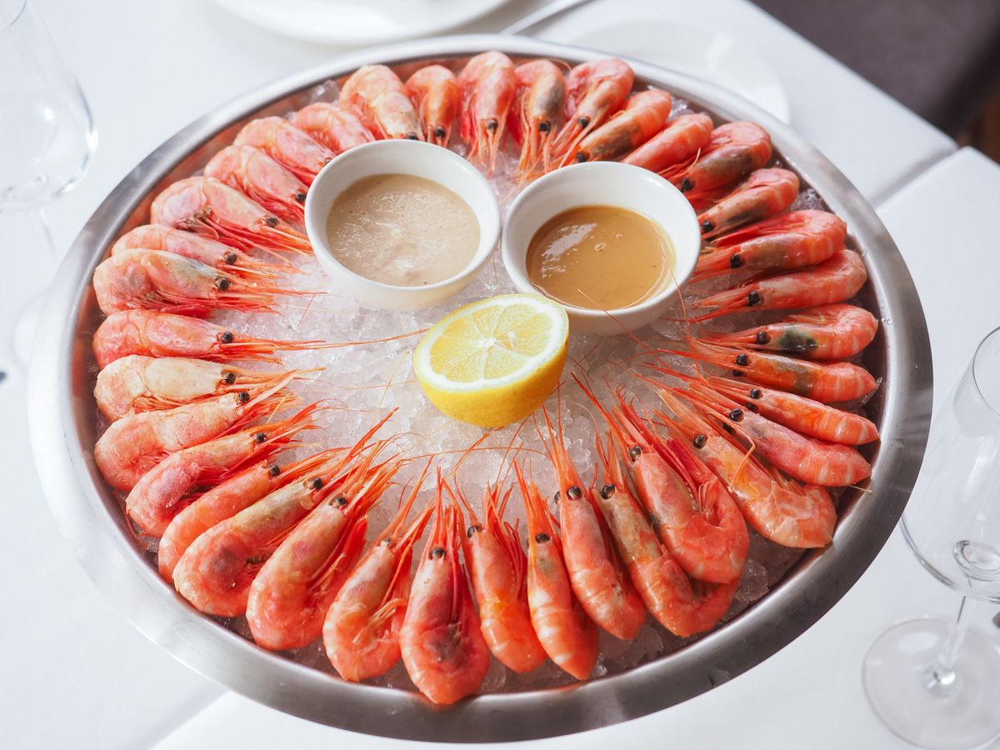
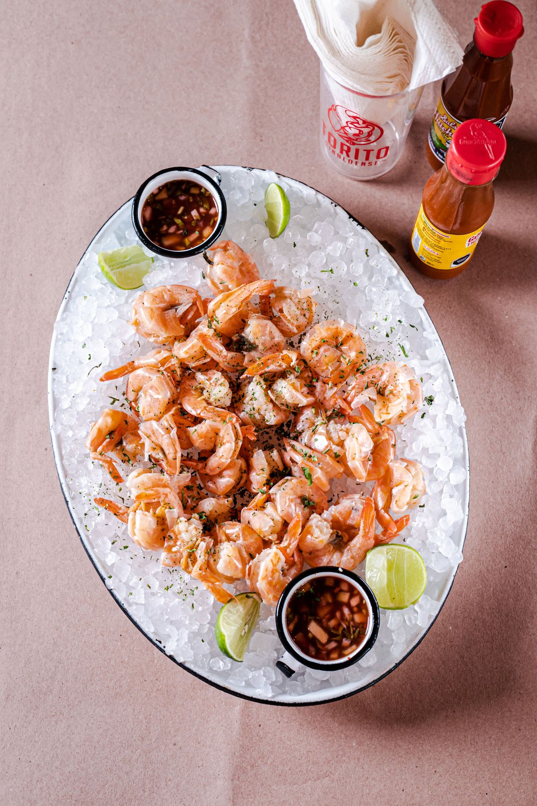

Services at Doc's Seafood Shack & Oyster Bar
A Gulf Coast seafood restaurant in Orange Beach, serving since 1984, with fried shrimp, oysters, gumbo, and seafood platters.
Services
Fried shrimp
Fried shrimp from the seafood menu.
Create-your-own seafood platter
A create-your-own seafood platter, built from the menu.
Super Seafood Platter
The Super Seafood Platter from the menu.
Oysters on the half shell
Oysters on the half shell.
Seafood gumbo
Seafood gumbo from the menu.
Fried stuffed crab
Fried stuffed crab from the menu.
Blue Plate lunch specials
Blue Plate lunch specials.
Takeout and delivery
Takeout and delivery offered by the restaurant.
Full bar
A full bar, including the Salted Caramel Bushwacker.
Gallery



All gallery photos are stock photos, labeled as such. They show the kind of work and setting described on this page, not this business.
Contact
Doc's Seafood Shack & Oyster Bar serves Orange Beach, AL. Questions? Call +1 251-981-6999.